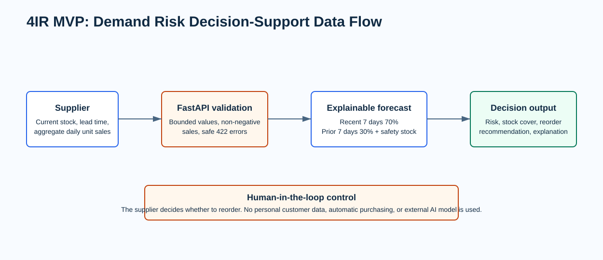

Demand Risk Decision Support
Helping small food suppliers make more consistent reorder decisions before stock runs out or perishable stock is wasted.
Primary user
Supplier inventory coordinator
The manual process is fragile
- Stock checks are informal and reactive.
- Replenishment lead time can turn low stock into a stockout.
- Over-ordering increases the risk of food waste.
Three realistic synthetic scenarios are included because supplier-owned history has not been provided. The business hypothesis remains to be validated with a real supplier.
Explainable AI-style decision support
A FastAPI MVP weights recent daily sales, calculates lead-time demand and safety stock, then returns a risk level and reorder recommendation.
Human stays in control
The supplier reviews the explanation and makes every reorder decision.
Built in two weeks
- Validated API and deterministic forecast.
- Dockerized local deployment.
- Synthetic scenario data and automated evaluation.
Not included
Automatic procurement, customer profiling, external AI APIs, weather or promotion signals, and real-world performance claims.
Input, controls, forecast, decision

Repeatable technical evidence
- Valid input returns a meaningful decision.
- Negative sales are safely rejected with HTTP 422.
- Each labeled synthetic scenario returns its expected class.
100% agreement on constructed synthetic labels. This is software correctness evidence, not production forecast accuracy.
Path to a production pilot
- Use consented aggregate supplier history.
- Evaluate a time-based holdout using MAE, stockout recall, false-alert rate, and decision time.
- Monitor data quality and seasonal shifts.
Mitigations: transparent formula, validation, no personal customer data, and human approval before action.